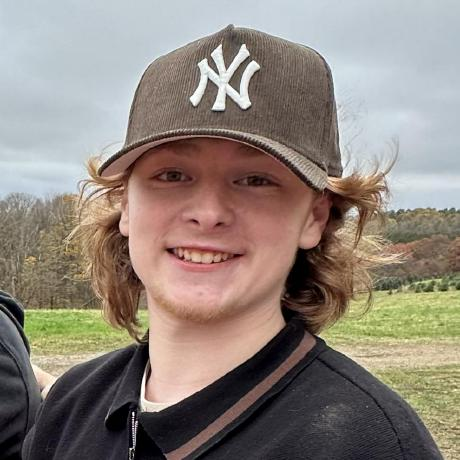

Hello! My name is Kaden DeFazio, and I'm passionate about game development. As a burgeoning game developer, I'm on a mission to make my mark in the industry. From a young age, I've been captivated by the intricacies of video games—the way Sonic dashes through levels or how Mario gracefully navigates obstacles. These experiences ignited my desire to create my own interactive worlds. Today, fueled by that childhood fascination and armed with creativity and determination, I'm committed to crafting captivating gaming experiences that resonate with players of all ages. My goal is simple: to develop games that not only entertain but also leave a lasting impression, sparking joy and wonder in every player who picks up a controller.